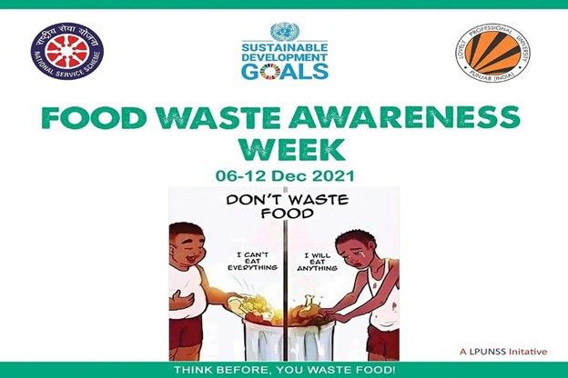
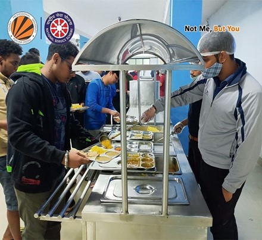

Food waste is any type of food that is discarded or not eaten. It can include uneaten food from
meals, spoiled food, trimmings from food preparation, and food products that have been damaged and
deemed unfit for human consumption.
Food waste management systems are critical in reducing the substantial amount of food waste generated by
businesses and households. These systems incorporate various practices such as composting, recycling,
and anaerobic digestion, which help in converting food waste into useful products like compost and
biogas. Additionally, these systems emphasize the importance of education and awareness campaigns to
inform individuals and organizations about the significant impact of their food choices on the
environment. By promoting sustainable practices, these campaigns encourage people to reduce waste and
make more environmentally conscious decisions.
Despite these efforts, a significant amount of high-quality, edible food is still discarded daily by
food businesses. This includes fresh produce like bell peppers that do not meet aesthetic standards,
crooked carrots, and surplus milk ordered by local school districts. Instead of feeding people, this
food often ends up in landfills, contributing to environmental degradation.
In India, the issue of food waste is particularly pronounced. Large weddings and parties are major
contributors to food waste, with vast quantities of food being prepared and then discarded. Restaurants
and hotels also play a significant role in generating food waste. According to the United Nations
Environment Programme's Food Waste Index Report 2021, nearly 14% of the total food produced globally is
lost between the harvest and retail stages. India alone contributes 68.8 million tonnes of wasted food
annually, accounting for 7% of the global total. This staggering amount highlights the urgent need for
effective food waste management systems to address the environmental and social challenges posed by food
waste.
Here, FoodCycle comes into picture.We have launched an initiative with the ambitious goal
of significantly reducing food waste and hunger. Our vision aligns with the principles of zero hunger
and responsible consumption and production. To achieve this, we are forging partnerships with various
banquets and hotels. These establishments often have surplus food that would otherwise go to waste.
Once collected, this food is then taken by charities and orphanages that we are in contact with. These
organizations play a crucial role in ensuring the food is distributed effectively among people who need
it most.
How can we manage food waste?
Here are few steps which we can follow in order to minimize food wastage:
1)Buy Smart: Purchase only what you need by planning meals in advance and storing food properly
to keep it fresh longer.
2)Compost: Turn food scraps into nutrient-rich compost for your garden.
3)Donate: Give surplus food to food banks, shelters, and other charitable organizations.
4)Recycle: Properly recycle food packaging and containers to reduce waste.
5) Repurpose Leftovers:Get creative with leftovers by incorporating them into new meals and
recipes.
6) Repurpose Leftovers:Reach out to your local government to learn about available food waste
programs in your area.
Solutions for food waste management in India:
1)Recycle by Composting:
Food producers can completely solve their waste management issues by implementing an effective
composting strategy. This approach not only eliminates waste but also saves money, as it eliminates the
need to outsource compost production.
2)Turn Wasted Food into Animal Feed:
Composting is a method to recycle food waste, but another option is to use it as feed for cows, sheep,
pigs, and other livestock, which will eventually become food themselves..
3)Use Waste Food to provide Products: From biofuels to liquid fertilizers, various useful
products can be manufactured from certain types of food waste. Often, the "leftovers" from one company
can be valuable resources for another business in need of food scraps.
4)Source Reduction and Food Donation: The simplest way to reduce waste is to produce less
whenever it is clear that production leads to excess. When surplus food is still safe to eat, it can be
distributed to hungry and impoverished individuals who struggle to afford adequate food in today's
expensive economy.
Together We Can!
We are trying our best to solve the problem of food waste and its management. But we need help from your
side as well. Apart from donating food, you can contribute much more towards the society.
Click here to view how much food was wasted globally in 2019. There are few
books available on food waste and its management. Some of them are:
1) Food Waste Management: Principles and Practices - Ram K. Vashist, Neelam Dhingra
2) Achieving Zero Food Waste: Strategies and Solutions for Food Service and Retail Operations - Andrew
Shakman and Martin K. Law
We recommend you to read the books mentioned above and actively participate in food waste awareness
campaigns.
 
You can find us on Google - 'Food waste management system in India' or 'FoodCycle'.
Newsletter
Subscribe to Get updates on events, volunteer opportunities and other news.